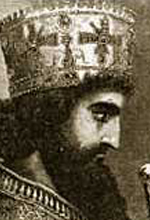

¿Quién fue Jerjes I?
Jerjes I, también conocido como Jerjes el Grande, fue un rey del Imperio aqueménida que gobernó entre 486 a.C. y 465 a.C..
Orígenes
Era hijo del rey Darío I y de Atosa, hija de Ciro el Grande. Fue proclamado rey tras la muerte de su padre.
Gobierno y conquistas
Jerjes es conocido por liderar la segunda invasión persa a Grecia. Durante su reinado ocurrieron eventos célebres como:
Relación con Mesopotamia
Durante su mandato, Mesopotamia formaba parte del imperio persa. Jerjes mantuvo el control sobre estas tierras, pero también enfrentó rebeliones en Babilonia, que reprimió con dureza.
Muerte
Jerjes I fue asesinado en 465 a.C. durante una conspiración palaciega organizada por uno de sus oficiales.
Legado
Aunque su campaña en Grecia fracasó, Jerjes dejó una huella duradera en la historia antigua por su rol en las Guerras Médicas y por haber gobernado uno de los imperios más extensos de la antigüedad.
| Atributo | Detalles |
|---|---|
| Nombre completo | Jerjes I (Jerjes el Grande) |
| Reinado | 486 a.C. – 465 a.C. |
| Dinastía | Imperio aqueménida |
| Padre | Darío I |
| Eventos importantes | Guerras médicas, batalla de las Termópilas, invasión a Grecia |
| Relación con Mesopotamia | Gobernó sobre territorios mesopotámicos como parte del Imperio Persa |
| Muerte | 465 a.C. (asesinado en una conspiración palaciega) |